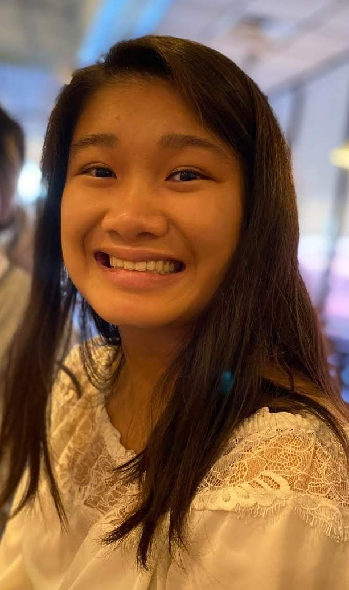

Hello! I'm Mai.
Nice to meet you! A little bit about me: I'm an avid space enthusiast and I love meeting new people.

I'm interested in working with embedded systems and I enjoy designing hardware components as well as integrating hardware with software.
I love space! I would like to work in the space and defense industry and contribute to space exploration. Thus, I would like to work with space technology.
I have experience working in the field with The Aerospace Corporation, Lockheed Martin, the Yellow Jacket Space Program, and Space Systems Design Laboratory.
Some of my interests is playing the guitar, reading, working out, and spending time with the fam.
Before COVID-19, I studied abroad in France and travelled all over Europe. Here are some of my photos!